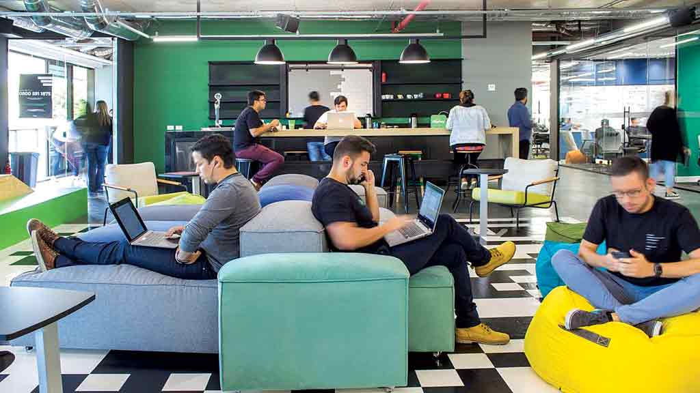

TEMA 4: CRIAÇÃO DE AMBIENTES LABORAIS PARA A ÁREA DE T.I
Estimular a criação de ambientes laborais é uma iniciativa crucial, especialmente no cenário dinâmico da Tecnologia da Informação (TI). Um ambiente de trabalho saudável não apenas promove o bem-estar dos profissionais, mas também contribui significativamente para a produtividade e satisfação no trabalho.

Para criar um ambiente saudável, é essencial considerar diversos aspectos. A ergonomia no espaço de trabalho desempenha um papel fundamental, fornecendo cadeiras confortáveis, mesas ajustáveis à altura e uma disposição adequada dos equipamentos. Além disso, a iluminação e a ventilação adequadas são elementos que influenciam diretamente a saúde e o conforto dos colaboradores. A Associação Internacional de Ergonomia relata que 60% a 70% dos trabalhadores de escritório sofrem de dores nas costas, o que pode ser atribuído a más práticas ergonômicas no ambiente de trabalho.
Incentivar a comunicação aberta sobre questões de saúde mental é igualmente importante, afinal, sabemos muito bem que a grande maioria dos funcionários não dão seu 100%, justamente por conta de todo o seu arredor que precisa de uma reforma/melhora imediata. Estratégias para reduzir o estresse, como programas de flexibilidade de horários e a possibilidade de trabalho remoto quando viável, são medidas que favorecem um equilíbrio saudável entre a vida profissional e pessoal. Além disso, estimular um ambiente de trabalho colaborativo e engajador são estratégias valiosas para estabelecer um ambiente laboral saudável e produtivo para os profissionais de TI.
No ambiente laboral, o conforto não deve ser considerado um luxo, mas sim um estímulo essencial. Dispor de um ambiente confortável vai além do simples bem-estar físico; ele se torna um elemento motivador para os profissionais. Quando um espaço de trabalho é projetado para oferecer conforto ergonômico, com mobiliário ajustável e adequado, iluminação favorável e condições que promovam a comodidade, os colaboradores se sentem mais engajados e motivados a desempenhar suas tarefas. Esse ambiente propício ao conforto se traduz em colaboradores mais produtivos e comprometidos com suas responsabilidades diárias.
É fundamental compreender que a promoção de ambientes laborais saudáveis não se trata apenas de um benefício para os profissionais de TI, mas sim de um investimento estratégico para as empresas. Ao cultivar um ambiente que valoriza a saúde física, mental e o equilíbrio entre vida profissional e pessoal, as organizações colhem frutos que transcendem a esfera individual, refletindo-se em equipes mais motivadas e engajadas em resultados mais sólidos e duradouros.

Imagina que incrível seria desfrutar de um ambiente de trabalho onde a colaboração é uma segunda natureza, um lugar onde colegas se ajudam mutuamente por pura vontade, sem expectativas de retribuição. Infelizmente, poucas empresas têm o privilégio de cultivar ambientes assim. É louvável encontrar pessoas dispostas a compartilhar conhecimentos e oferecer auxílio quando têm um momento livre, promovendo um espírito de cooperação em vez de competição. É essa atmosfera de equipe, não de rivalidade, que verdadeiramente caracteriza uma comunidade no local de trabalho. Uma boa ergonomia não apenas cuida do bem-estar, mas também impulsiona a produtividade de uma equipe.